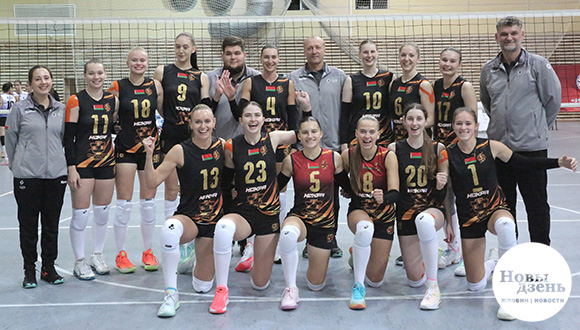

Волейбольный клуб
Волейбольный клуб «Искра» — женская волейбольная команда, представляющая Жлобин. Клуб базируется во Дворце игровых видов спорта, который был открыт в 2013 году и стал настоящим домом для волейбола и гандбола в регионе.
«Искра» — один из лидеров женского волейбола Гомельской области. Команда регулярно участвует в республиканских соревнованиях и является кузницей кадров для сборных Беларуси различных возрастов.
Особое место в истории команды занимает Надежда Тишкова — капитан «Искры» и одна из самых ярких волейболисток региона. Она представляла Беларусь на молодёжном чемпионате Европы U-20 по пляжному волейболу и дошла до плей-офф вместе с напарницей.
Воспитанницы жлобинской школы волейбола регулярно вызываются в юношеские и молодёжные сборные страны, а также продолжают карьеру в ведущих клубах Беларуси.
Дворец игровых видов спорта, где тренируется и играет «Искра», вмещает 1500 зрителей. Это одна из лучших волейбольных площадок региона, на которой проходят матчи республиканского и международного уровня.
«Искра» — это команда, которая объединяет поколения и доказывает, что большой спорт начинается с малого города.